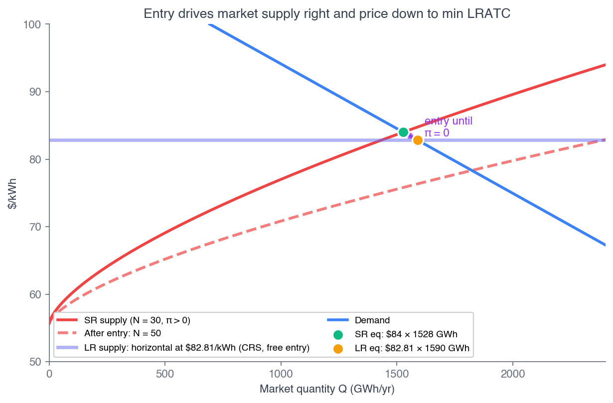

ECON 2316 • Microeconomic Theory • Chapter 10
Perfect Competition
In Chapter 9 we wrote down a number — \$82.81/kWh — and called it the gigafactory's long-run knife-edge. This chapter asks: why that number? And once it's pinned, how many gigafactories does the world need?
Dr. Richeng Piao
Department of Economics
Northeastern University — 100 min
Learning Objectives
By the end of class today, you will be able to…
10.1
State the four conditions for perfect competition and explain why "perfect competition" is a benchmark, not a literal description. (Bloom L2)
10.2
Build market supply as the horizontal sum of firm supplies \(Q^s(p)=\sum_i q_i^*(p)\) and clear the short-run market with \(N\) fixed. (Bloom L3)
10.3
Derive the long-run free-entry equilibrium: \(p^{LR}=\min LRATC\), \(\pi=0\), and the firm count \(N^* = Q^d(p^{LR})/q^*\). (Bloom L4 — central result)
10.4
Prove the First Welfare Theorem — competitive equilibrium maximizes total surplus \(TS(Q)=\int_0^Q [P^d-P^s]\,dq\). (Bloom L5)
10.5
Contrast capital free entry (gigafactories) with biological adjustment (eggs), and show how a price floor breaks the welfare theorem. (Bloom L4)
From One Firm's Supply to the Whole Industry
Ch 9 — the single firm
- Profit-max: \(p = MC(q^*)\)
- Supply \(=\) inverse-\(MC\) above shutdown
- SR snapshot: \(p=\$84\), \(q^*=50.9\) GWh, \(\pi^*=\$58.6\)M
- CRS knife-edge: LR firm output is indeterminate at \(p=\min LRATC\)
Ch 10 — the industry
- Market supply \(=\) horizontal sum of firm supplies
- Short run: \(N\) fixed, price clears
- Long run: free entry drives \(\pi \to 0\)
- Knife-edge resolved: \(p^{LR}=\min LRATC\); \(N^*\) is the equilibrating variable
The locked \$84 was an SR snapshot; the locked \$82.81 was a firm-level derivation. Today the \$82.81 becomes an industry-equilibrium prediction: free entry pushes the global pack price down to exactly \(\min LRATC\), and the \$1.19 wedge between \$84 and \$82.81 is the slack that drives entry over the long run.
Free Entry in the Wild — The 2024–2026 Battery Shakeout
November 2024: Northvolt — Europe's flagship battery startup, \$15B from VW, Goldman, BlackRock — files for Chapter 11. Its cost ran ~\$130/kWh against a \$108 global price; its plant ran at ~5% of capacity. The board chose exit.
The same year, CATL, Stellantis-Samsung, and LG Energy broke ground on new gigafactories. Some firms entering, some exiting — same global market, same year.
This is perfect competition in the wild: capital flows in where \(\pi > 0\) and out where \(\pi < 0\), with price adjusting toward \(\min LRATC\).
\$15B
Northvolt backing — exited anyway (Nov 2024)
~5%
Skellefteå plant capacity utilization in 2024
100
GWh CATL Hungary plant (entering, 2026)
\$82.81
Where the model says price settles
Britishvolt collapsed Jan 2023; SVOLT abandoned Brandenburg May 2024; FREYR walked from a \$2.6B Georgia plant Feb 2025. The model predicts where this noisy entry/exit process settles — and the locked \$82.81 is that point.
§10.2
Four Conditions
What does it take for a market to be "perfectly competitive"?
A Market Is Perfectly Competitive If…
1. Many small firms
No firm is a non-trivial share of output, so no firm's decision moves the price.
2. Homogeneous product
Every firm's output is identical; buyers care only about price, not brand.
3. Free entry & exit
Firms enter or leave without a fixed cost beyond the capital they install or abandon.
4. Perfect information
Everyone knows every price, every cost structure, every quality.
Each is an idealization — none is literally true in any real market. Condition 1 is closest to true for Iowa corn or a single trader on the Chicago Board of Trade; Condition 2 for #2 yellow corn; Condition 3 where capital is portable; Condition 4 where prices are listed and updated.
Price-Taking, Made Formal
For an individual firm \(i\), its own output cannot move the price:
\(\displaystyle \frac{\partial p}{\partial q_i} = 0\)
This does not mean prices are constant — they move when aggregate supply or demand shifts. It means any single firm's contribution is too small to matter. The firm treats \(p\) as exogenous — exactly what let us set \(p=MC(q^*)\) in Ch 9.
Contrast (Ch 11): a monopolist has \(\partial p/\partial q < 0\), so \(MR = p + (\partial p/\partial q)q < p\). The gap is the markup; under perfect competition the markup is zero.
Heads Up 10.1
"Perfect competition" does not mean "perfect markets." The four conditions describe a limiting case, not a claim that real markets work flawlessly. The model's value is a clean prediction (\(p=\min ATC\), surplus maximized) for any market that comes close enough.
Is the battery industry "close enough"? An empirical question — but §10.5's \(N^*=50\) lands near the 30–40 gigafactories actually operating in 2025, so industry-wide quantity dynamics still track the benchmark despite CATL's 39% share.
Application 10.1 — Cocoa Futures as Canonical Price-Taking
Want a market closer to the four conditions than batteries? ICE Cocoa futures — thousands of contracts/day, many small participants, a homogeneous delivery grade, near-perfect price information.
West African drought + crop disease drove the price from ~\$4,200/ton (mid-2023) to over \$10,000/ton (Mar 2024) — a 2.4× spike in nine months — then back to ~\$3,240 by Mar 2026 as production rebounded.
No single farmer or trader moved this price: \(\partial p/\partial q_i = 0\) is closer to literal truth here than in any battery market. The chapter's machinery applies directly, without heavy qualification.
\$4.2K
Cocoa \$/ton, mid-2023
\$10K+
Peak \$/ton, March 2024
\$3.2K
\$/ton by March 2026 (rebound)
2.4×
Nine-month price swing
§10.3
Market Supply: The Horizontal Sum
\(\displaystyle Q^s(p) = \sum_{i=1}^N q_i^*(p)\)
Add Quantities Across Firms at Each Price
Every firm faces the same price \(p\) (price-taking). What differs is the quantity each supplies. So we add along the quantity axis:
\(Q^s(p) = \sum_{i=1}^N q_i^*(p) \;\xrightarrow{\text{symmetric}}\; N\cdot q^*(p)\)
With symmetric firms, market supply is just \(N\) copies of one firm's curve, scaled horizontally. For our gigafactory cohort: \(N\) times the locked Ch 9 firm supply.
Heads Up 10.2
Sum quantities, not prices. There is no meaning in adding firm \(A\)'s \$4 shutdown price to firm \(B\)'s \$6. The price is the same for everyone; quantities are what differ.

Fig 10.2 — firm supply (left) sums horizontally into market supply (right).
Calculus Corner 10.1 — The Market Elasticity Equals the Firm Elasticity
Symmetric firms, \(Q^s = N q^*(p)\). Compute the market-supply elasticity:
\[ \varepsilon^s_{\text{mkt}} = \frac{p}{Q^s}\frac{dQ^s}{dp} = \frac{p}{N q^*}\,N\frac{dq^*}{dp} = \frac{p}{q^*}\frac{dq^*}{dp} = \varepsilon^s_{\text{firm}} \]
The \(N\) cancels. Multiplying a curve by a constant doesn't change its percentage responsiveness.
For our gigafactory, the firm-supply elasticity is \(1.5\cdot p/(p-m)\). At \(p=\$84\), \(m=\$55.6\):
\(\varepsilon^s = 1.5 \cdot \dfrac{84}{84-55.6} = 1.5 \cdot \dfrac{84}{28.4} \approx 4.44\)
Same number at \(N=1\), \(N=30\), or \(N=50\). The \(1.5\) is pure technology \((\beta/(1-\beta))\); the \(p/(p-m)\) factor blows it up because output responds to the thin value-added margin \(p-m\), not to \(p\) directly.
Walkthrough 10.1 — Horizontal Sum with Heterogeneous Shutdowns
Problem. Firm \(A\): \(q_A^*(p)=2(p-4)\) for \(p\geq 4\), else 0. Firm \(B\): \(q_B^*(p)=3(p-6)\) for \(p\geq 6\), else 0. Construct market supply \(Q^s(p)\) on \([0,10]\).
Set up & solve — three regions
\(p\in[0,4)\): no firm operates. \(Q^s = 0\).
\(p\in[4,6)\): only \(A\). \(Q^s = 2(p-4) = 2p-8\).
\(p\in[6,10]\): both. \(Q^s = 2(p-4)+3(p-6) = 5p-26\).
Check the kink at \(p=6\)
From below: \(2(6)-8 = 4\). From above: \(5(6)-26 = 4\). Continuous — no jump.
But the slope jumps from 2 to 5: firm \(B\)'s output is added on once \(p\geq 6\). Market supply kinks at each firm's shutdown threshold.
Takeaway. Heterogeneous markets have piecewise supply: each kink adds the next firm. The slope is the sum of operating firms' slopes — the seed of upward-sloping long-run supply in §10.6.
§10.4
Short-Run Market Equilibrium
\(N\) fixed — the price does the adjusting: \(N\cdot q^*(P^*) = Q^d(P^*)\)
With \(N\) Fixed, Price Clears the Market
In the short run, \(N\) is exogenous — entrants are still raising capital and building. The market clears by adjusting price:
\(N\cdot q^*(P^*) = Q^d(P^*)\)
New Ch 10 lock — demand calibration
Anchor on 2025 global Li-ion demand (Benchmark Mineral Intelligence): \(Q^d(\$82.81)=1{,}590\) GWh. Two points give the linear demand:
\(Q^d(p) = 5{,}911.43 - 52.185\,p\)
Demand elasticity at \(p^{LR}\): \(\varepsilon^d = -52.185\cdot 82.81/1{,}590 \approx -2.72\). Highly elastic — cheaper packs make cheaper EVs.

Fig 10.3 — SR equilibrium with the firm's profit rectangle.
Walkthrough 10.2 — SR Equilibrium with \(N_{SR}=30\)
Problem. 30 symmetric gigafactories, each with the locked Ch 9 supply (\(q^*=50.93\) GWh at \(p=\$84\)); demand \(Q^d(p)=5{,}911.43-52.185p\). Find \((P^*, Q^*)\), per-firm \(q^*\), and each firm's profit.
Set up & solve
Market clearing: \(30\cdot q^*(P^*) = Q^d(P^*)\). From Ch 9's locked optimum, each firm at \(p=\$84\) makes \(q^*=50.93\) GWh, so industry \(Q = 30\times 50.93 = 1{,}527.9\) GWh.
Check demand: \(Q^d(84) = 5{,}911.43 - 52.185(84) = 1{,}527.9\) GWh. Market clears at \(P^* = \$84\). ✓
Profit & interpretation
Each firm's profit is the Ch 9 lock: \(\pi^* = \$58.6\)M/yr (a 1.4% operating margin).
\(P^* = \$84 > p^{LR} = \$82.81\), so each firm earns positive economic profit. This is a consistent SR equilibrium — what's missing is the free-entry adjustment.
Takeaway. At \(N_{SR}=30\), SR equilibrium reproduces the Ch 9 snapshot exactly. The \$1.19 wedge between \$84 and the \$82.81 knife-edge is the slack that will drive entry — next.
Application 10.2 — Austin's 2017 Rideshare Re-Entry
Austin restricted \(N\) artificially in 2016 — Uber and Lyft left rather than comply with fingerprint rules. When Texas HB 100 preempted local rules in May 2017, both returned within weeks.
The entry shifted market supply rightward; the same market price moved down the demand curve. RideAustin's ridership fell ~36% and it cut fares ~36% to compete.
The competitive logic — entry until the marginal participant earns zero economic profit — describes the trajectory exactly. More drivers → average revenue per ride falls toward each driver's reservation rate.
−36%
RideAustin ridership after Uber/Lyft return
−36%
Fare cut to compete with re-entrants
May 2017
HB 100 preempts local rules statewide
§10.5 — the central derivation
Long-Run Free-Entry Equilibrium
\(\pi^{LR}=0 \iff p^{LR}=\min LRATC\), and \(N^*\) absorbs demand
Free Entry Drives Profit to Zero
Above \(\min LRATC\), profit is positive and firms enter; below, profit is negative and firms exit. Price settles where the marginal entrant earns exactly zero:
\(\pi^{LR}=0 \iff p^{LR}=\min LRATC\)
For the gigafactory, \(\min LRATC\) was locked in Ch 9: long-run \(K\!+\!L\) marginal cost \(\$27.21\) (constant under CRS) plus materials \(m=\$55.60\):
\(\min LRATC = \$27.21 + \$55.60 = \mathbf{\$82.81}\)/kWh
A Ch 9 derivation is now an industry-equilibrium prediction: free entry pushes the global pack price to exactly \$82.81/kWh.

Fig 10.4 — LR equilibrium: \(p=\min LRATC\), \(\pi=0\).
Calculus Corner 10.2 — The Firm Count \(N^*\)
Under CRS the firm's individual LR output is indeterminate at \(p=\$82.81\) (Ch 9's knife-edge). Anchor each firm at the Ch 7 plant size \(q^*=32\) GWh; then demand pins the firm count:
\[ N^* = \frac{Q^d(p^{LR})}{q^*} = \frac{5{,}911.43 - 52.185(82.81)}{32} \]
\(= \dfrac{1{,}590}{32} = 49.69 \approx \mathbf{50}\)
\(N^*\) is the equilibrating variable. If demand were 2,000 GWh, \(N^*=63\). The price doesn't move — the firm count does. This resolves Ch 9's CRS knife-edge.

Fig 10.5 — entry shifts market supply right, price falls toward \$82.81.
Walkthrough 10.3 — LR Free-Entry Equilibrium
Problem. Every gigafactory has \(\min LRATC = \$82.81\)/kWh; demand \(Q^d(p)=5{,}911.43-52.185p\); each firm anchored at \(q^*=32\) GWh. Find the long-run equilibrium.
Set up & solve
Free entry: \(p^{LR}=\min LRATC = \$82.81\)/kWh.
Demand there: \(Q^d(82.81) = 5{,}911.43 - 4{,}321.43 = 1{,}590\) GWh.
Firm count: \(N^* = 1{,}590/32 = 49.69 \approx\) 50 gigafactory-equivalents.
Check against reality
Each firm: \(\pi = (82.81-82.81)\times 32 = 0\). Zero economic profit ✓.
SNE Research counts ~30–40 major operating gigafactories in 2025 (some larger than 32 GWh) — the model's \(N^*=50\) lands in the right neighborhood.
Takeaway. The chapter's headline: \(N^* = Q^d(\min LRATC)/q^*\). Over the LR adjustment, ~20 new firms enter (50 − 30), price falls \$1.19, and per-firm output drops from 50.9 to 32 GWh.
Poll #1 — Demand Rises. What Adjusts?
In long-run competitive equilibrium with free entry and constant returns to scale, global battery demand rises permanently. In the new long-run equilibrium, which variable absorbs the increase?
60 sec to vote
Answer: C — the firm count \(N^*\) rises
Free entry pins \(p^{LR}=\min LRATC=\$82.81\); CRS pins per-firm output at the plant anchor \(q^*=32\) GWh. Only the firm count absorbs demand:
\( N^* = Q^d(p^{LR})/q^* \quad\Rightarrow\quad 1{,}590\to 2{,}000 \text{ GWh} \;\Rightarrow\; N^* = 50 \to 63 \)
Traps: A — price is fixed by free entry, not by demand. B — under CRS, individual firm output is indeterminate (anchored at plant size). D — CRS means constant marginal cost.
Long-Run Adjustment Is Slow — and the Industry Is Concentrated
Heads Up 10.3
The model is a steady state, not a transition-speed claim. The 30→50 firm adjustment takes years — gigafactories need 2–4 years from announcement to operation (financing, permits, equipment, hiring, the learning curve). Real industries spend years or decades in long-run adjustment.
In 2024–2026 the industry has ~30–40 plants and a price ~\$84, with both entry (CATL Hungary, LGES Arizona) and exit (Northvolt, SVOLT, FREYR) ongoing — observably in adjustment.
Theory and Data 10.1 — concentration during adjustment
2025 EV-battery shares: CATL 39.2%, BYD 16.4%, LGES 9.2%, … HHI ~2,000 (moderately concentrated), \(CR_4 \approx 70\%\).
Parallels: US banks fell from ~14,000 (1980) to ~4,500 (2025); airlines deregulated 1978 then consolidated. Long-run adjustment is a multi-decade process — the competitive prediction is a limiting target, not a snapshot.
"Zero Profit" Doesn't Mean the 10-K Shows Zero
Heads Up 10.5
Zero economic profit ≠ zero accounting profit. Economic cost includes the opportunity cost of capital — for the gigafactory, \(r\bar K = 0.13\times 4 = \$0.52\)B/yr the firm could earn elsewhere.
A firm at LR equilibrium with zero economic profit still shows positive accounting profit \(\approx r\bar K\) on its 10-K. The two differ by the foregone return on equity capital.
Recall from Principles — 1116 §10.5
In Principles, "Long-Run Equilibrium — The Invisible Hand at Work" told this graphically: free entry drives price down to the minimum of \(LRATC\), where the price line is tangent to the bottom of the U-shaped cost curve and economic profit is competed to zero.
Chapter 10 writes the same picture in algebra: \(p^{LR}=\min LRATC\), with \(N^*\) the equilibrating variable. Under CRS the firm output drops out and \(N^*\) does all the work.
Walkthrough 10.4 — Long-Run Exit at \(p < \min ATC\)
Problem. Price sits persistently at \(p=\$80\)/kWh — below the \$82.81 knife-edge. Under CRS (LRATC constant in \(q\)), what is LR profit, and what is the exit decision?
Set up & solve
LR profit at any \(q\): \(\pi^{LR}(q) = (p - \min LRATC)\cdot q\). The per-unit term \(80 - 82.81 = -\$2.81\)/kWh is negative.
At plant anchor \(q=32\): loss \(= -2.81\times 32 = -\$89.92\)M/yr. Loss is proportional to \(q\), so best LR response is \(q=0\) — exit.
Check — self-correcting
As firms exit, market quantity falls, so price rises back up the demand curve toward \$82.81. The \$80 scenario is a transient, not a stable equilibrium.
No SR-style "operate at a loss" band exists in the LR — that asymmetry comes from sunk fixed cost (Ch 9), absent here.
Takeaway. Under CRS, LR exit is automatic whenever \(p<\min LRATC\). The exit decision is binary: \(p\geq\min LRATC\) → operate; \(p<\min LRATC\) → exit. Free entry/exit forces \(p=\min LRATC\) exactly.
§10.6
Long-Run Market Supply
Symmetric firms → flat; heterogeneous firms → upward-sloping + Ricardian rents
When Firms Differ, LR Supply Slopes Up
Symmetric firms → LR supply is horizontal at \(\min LRATC=\$82.81\): below it all firms exit, above it infinite entry. \(N^*\) adjusts at the flat price.
But real firms differ — management, technology vintage, input access, location. Let potential entrants have \(\min LRATC \sim F(c)\). At price \(p\), firms with cost \(\leq p\) enter:
\(Q^s_{LR}(p) = N_{\text{pot}}\,q^*\,F(p), \quad \frac{dQ^s_{LR}}{dp} = N_{\text{pot}}\,q^*\,F'(p) > 0\)
Infra-marginal firms (cost strictly below \(p\)) earn Ricardian rents \((p-\min LRATC_i)\cdot q^*\); the marginal firm earns zero. (Formalized by Melitz 2003.)

Fig 10.7 — SR supply (steep, \(N\) fixed) vs LR supply (flatter, entry/exit).
Walkthrough 10.5 — LR Supply with a Uniform Cost Distribution
Problem. 100 potential operators, each with \(\min LRATC\) drawn uniformly on \([\$80,\$90]\); each active firm produces \(q^*=32\) GWh. Find LR market supply on \([80,90]\).
Set up & solve
Uniform CDF: \(F(p) = (p-80)/10\). Active firms: \(100\,F(p) = 10(p-80)\).
Market supply: \(Q^s_{LR}(p) = 10(p-80)\times 32 = 320(p-80)\) GWh.
Check the endpoints
At \(p=\$80\): \(Q^s_{LR}=0\) (no firm profitable yet). At \(p=\$90\): \(320\times 10 = 3{,}200\) GWh (all 100 operate).
Slope \(dQ^s_{LR}/dp = 320\) GWh per \$/kWh — entrants flow in at a constant rate as price climbs the cost distribution.
Takeaway. Heterogeneous costs → upward-sloping LR supply. A tighter cost distribution gives a steeper curve; a wider one flatter. The marginal firm earns zero; infra-marginal firms earn Ricardian rents.
Application 10.3 — Freelance Platforms & the Cost Gap
Within a skill band, Upwork / Fiverr / Toptal approximate competition: services reasonably homogeneous, sellers and buyers in the hundreds of thousands, prices updated in real time.
Too many sellers chasing too few buyers → the going rate drops; high rates draw new sellers → the rate adjusts back. Approximate price-taking — no single seller's quote moves the platform rate.
The platform fee (take rate 10–28%) is a wedge like a tax — we'll formalize that DWL in §10.9. Closer to competition than branded goods, not as close as cocoa.
27.7%
Fiverr take rate (FY2025)
3.1M
Fiverr active buyers (2025)
The cost gap, made visible (BNEF 2025)
China pack ~\$84/kWh; Europe ~56% higher (~\$131); North America ~44% higher (~\$121). Real cost heterogeneity — the engine of §10.6's upward-sloping LR supply and CATL's 39% share.
§10.7
The First Welfare Theorem
Is the competitive equilibrium good? — \(TS(Q)=\int_0^Q [P^d-P^s]\,dq\)
Competitive Equilibrium Maximizes Total Surplus
Recall the surplus integrals from Ch 2. Total surplus is the sum — and the price cancels:
\[ TS(Q) = \int_0^Q [P^d(q) - P^s(q)]\,dq \]
The integrand is positive for \(q < Q^*\) (demand price exceeds supply price — a mutually beneficial trade) and negative for \(q > Q^*\). So \(TS\) rises until \(Q^*\) and falls after. The maximum is at \(Q^*\). That's the proof.
Heads Up 10.4
The theorem is an equilibrium statement: if the market reaches the competitive equilibrium, total surplus is maximal. It says nothing about how fast, or about fairness, equality, or sustainability.

Fig 10.6 — CS + PS, maximized at \(Q^*\).
Calculus Corner 10.3 — The Proof in Two Derivatives
Differentiate \(TS(Q) = \int_0^Q [P^d-P^s]\,dq\):
\[ \frac{dTS}{dQ} = P^d(Q) - P^s(Q) \]
FOC: \(\dfrac{dTS}{dQ}=0 \iff P^d(Q^*)=P^s(Q^*)\) — exactly the competitive equilibrium.
\[ \frac{d^2 TS}{dQ^2} = \underbrace{\tfrac{dP^d}{dQ}}_{<0} - \underbrace{\tfrac{dP^s}{dQ}}_{>0} < 0 \]
SOC negative → \(Q^*\) is a maximum.
The calculus says the same thing as the geometry: the competitive quantity is where inverse demand meets inverse supply, and the second-order condition confirms it's a peak, not a trough.
We've now seen these surplus integrals three times: Ch 2 introduced them, Ch 3 used them for tax DWL, and Ch 10 uses them to prove the competitive \(Q^*\) is optimal, not just consistent.
The argument generalizes: any well-behaved S&D system (demand down, supply up) has a competitive equilibrium that maximizes total surplus.
Walkthrough 10.6 — Welfare Theorem on the Locked Egg Market
Problem. Locked Ch 2 linear market: \(Q^d=200-5P\), \(Q^s=50+10P\) (\(P\) in \$/dozen, \(Q\) in M dozens/wk). Verify the competitive equilibrium maximizes total surplus.
Set up & solve
Equilibrium: \(200-5P=50+10P \Rightarrow P^*=\$10\), \(Q^*=150\). Inverse curves: \(P^d=40-0.2Q\), \(P^s=0.1Q-5\). Integrand: \(45-0.3q\).
\(TS(Q)=\int_0^Q(45-0.3q)\,dq = 45Q-0.15Q^2\). FOC: \(45-0.3Q=0 \Rightarrow Q^{TS}=150\). SOC \(=-0.3<0\) ✓.
Check the pieces add up
\(TS(150)=45(150)-0.15(150)^2 = 6{,}750-3{,}375 = \$3{,}375\)M/wk.
\(CS=\tfrac12(40-10)(150)=\$2{,}250\); \(PS=\tfrac12(10-(-5))(150)=\$1{,}125\). Sum \(=\$3{,}375\)M ✓.
Takeaway. The competitive \((\$10, 150)\) hits the surplus peak. Any departure — floor, tax, monopoly — produces deadweight loss. Next: a price floor that does exactly that.
Welfare Gains from Competitive Entry Are Real and Measurable
Recall from Principles — 1116 §5.3
Principles §5.3 told the efficiency story graphically: total surplus is the area between demand and supply up to \(Q^*\), maximized at the competitive quantity; any wedge leaves a triangular deadweight loss no one captures.
Chapter 10 writes the same statement as the integral identity. The triangle and the integral are the same claim in two languages.
Theory and Data 10.2 — three brackets on entry gains
- Atkin-Faber-González-Navarro (2018): Mexican retail liberalization → ~6% household welfare gain, largest for low-income households.
- EU Single Market (2025): at least 3–4 ppts of EU GDP.
- Goldberg et al. (2010): Indian trade liberalization → large gains via product variety.
A 6%-of-income welfare gain across an economy is comparable to several years of typical productivity growth — the competitive benchmark isn't a blackboard abstraction.
§10.8
Long-Run Adjustment via Biology
When the binding factor is a living thing, not capital — HPAI and eggs
Capital Free Entry vs Biological Flock Rebuild
The 2022–2026 HPAI outbreak culled ~168M layers; retail eggs spiked from ~\$1.50–2.00 to \$4.95/dozen (Jan 2025). By March 2026, with the flock rebuilt to ~309M birds, prices fell back to \$2.35/dozen.
The binding LR factor here is biological, not financial. A pullet needs 18–20 weeks to lay — you cannot accelerate it with capital. Supply shifts back only as fast as farmers can hatch and raise replacements.
Theory and Data 10.3
Mitchell-Thompson-Malone (2024): HPAI raised weekly retail egg prices ~5.3% on average. Models ignoring flock recovery overstate CS losses 3–4× — losses concentrate in the recovery window.

Fig 10.8 — HPAI supply shock and recovery in the egg market.
Walkthrough 10.7 — HPAI Recovery via the Shifter \(\alpha\)
Problem. Demand \(Q^d=200-5P\); supply with recovery shifter \(Q^s(p,\alpha)=20+10p+\alpha\). Trace SR→LR adjustment as \(\alpha\) rises from 0 (full shock) through 15 (partial) to 30 (full recovery).
Set up & solve
Clearing: \(200-5P=20+10P+\alpha \Rightarrow P^*(\alpha)=(180-\alpha)/15\).
| \(\alpha\) | \(P^*\) | \(Q^*\) | State |
|---|---|---|---|
| 0 | \$12 | 140 | full shock |
| 15 | \$11 | 145 | partial |
| 30 | \$10 | 150 | pre-shock |
Check & interpret
Comparative statics: \(dP^*/d\alpha = -1/15\) (price falls as flock recovers); \(dQ^*/d\alpha = 1/3\) (quantity rises).
Full recovery (\(\alpha=30\)) returns supply to \(Q^s=50+10P\) — exactly the pre-shock equilibrium \((\$10, 150)\).
Takeaway. Adjustment runs through \(\alpha\) (the flock rebuild), not firm entry. No new firms needed — but the welfare theorem still holds at each instant: \(p=MC\), efficient given the current flock.
§10.9
When the Welfare Theorem Fails
A binding price floor — a preview of all of Part IV & V
Walkthrough 10.8 — A Binding Price Floor on Eggs
Problem. Locked egg market \((P^*, Q^*)=(\$10, 150)\). Government sets a floor \(P_{\text{floor}}=\$12\)/dozen. Find quantity traded, deadweight loss, and the change in CS and PS.
Set up & solve
\(P_{\text{floor}}=12>P^*=10\): binding. \(Q^s(12)=170\), \(Q^d(12)=140\). Trade is the short side: \(Q_{\text{traded}}=140\), with 30 of excess supply.
Supply price at \(Q=140\): \(P^s(140)=0.1(140)-5=\$9\). Wedge \(=12-9=\$3\). \(DWL=\tfrac12(3)(150-140)=\$15\)M/wk.
Check the surplus split
\(CS: \$2{,}250 \to \$1{,}960\) (\(-\$290\)). \(PS: \$1{,}125 \to \$1{,}400\) (\(+\$275\)) on traded units.
Net: \(-290 + 275 = -\$15\)M/wk — matches the DWL ✓. \(TS: \$3{,}375 \to \$3{,}360\) (\(-0.4\%\)).
Takeaway. The floor transfers surplus buyers→sellers and destroys \$15M. This is the template for every failure ahead: monopoly (Ch 11), externalities (Ch 17), public goods & asymmetric info (Chs 16, 18).
§10.10 — A Note on Léon Walras (1834–1910)
Adam Smith described the "invisible hand" as a metaphor in 1776. Walras's 1874 Éléments d'économie politique pure made it rigorous: a general-equilibrium system of simultaneous equations with a single price vector that clears every market at once.
To explain how a market finds it without central direction, he invented the tâtonnement ("groping"): a hypothetical auctioneer raises prices where there's excess demand, lowers them where there's excess supply, and trade happens only at the clearing vector.
§10.7's welfare-theorem proof is partial equilibrium — one market at a time. Walras's framework extends the same logic to all markets simultaneously.
Walras didn't fully prove existence or uniqueness — those awaited Arrow & Debreu (1954), who used separating-hyperplane theorems to establish both welfare theorems rigorously. But Walras saw the structure first.
The Second Welfare Theorem (any Pareto-efficient allocation can be supported by some competitive equilibrium with appropriate redistribution) is the formal modern statement. Both are graduate-level — Walras pointed at them in 1874.
Chapter Summary
Four conditions
Many small firms, homogeneous product, free entry/exit, perfect info — a benchmark, not a literal description.
Market supply
Horizontal sum \(Q^s=\sum_i q_i^*\); symmetric → \(N q^*\); elasticity unchanged by \(N\).
LR free entry ★
\(p^{LR}=\min LRATC=\$82.81\); \(N^*=Q^d/q^*=1{,}590/32\approx 50\). Resolves the CRS knife-edge.
Welfare theorem
\(TS=\int_0^Q[P^d-P^s]dq\), maximized at \(Q^*\). Competitive equilibrium is efficient.
Heterogeneity & biology
Cost spread → upward-sloping LR supply + Ricardian rents. Eggs adjust biologically (18–20 wk pullets).
Failure preview
A price floor breaks efficiency (\(DWL=\$15\)M) — the template for Chs 11, 16, 17, 18.
Why \$82.81? Because free entry pins \(p^{LR}=\min LRATC\). The gigafactory thread retires here: the \$84 we locked in Ch 9 is now endogenous, and the world needs \(N^*=50\) gigafactory-equivalents.
Coming Up — Chapter 11: Monopoly
Today the firm was a price taker with \(\partial p/\partial q = 0\). Chapter 11 flips the single assumption that drives everything about market power.
\(\dfrac{\partial p}{\partial q} < 0 \;\Rightarrow\; MR = p + \dfrac{\partial p}{\partial q}\,q < p \;\Rightarrow\; MR = MC \text{ at } Q_m < Q^*\)
- Marginal revenue below price: the monopolist's output drives price down along demand.
- The Lerner index: \((P-MC)/P = -1/\varepsilon\) — markup as the inverse of elasticity.
- Deadweight loss returns: \(Q_m < Q^*\), so the welfare theorem fails — the price floor of §10.9, but chosen by the firm.
Before next class: read manuscript §11.1–§11.3. Today's competitive equilibrium is the benchmark every later chapter measures against.
Questions?
Dr. Richeng Piao · ECON 2316 · Chapter 10